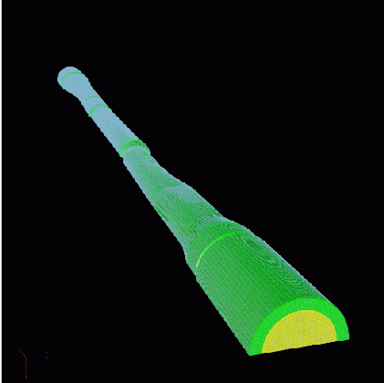
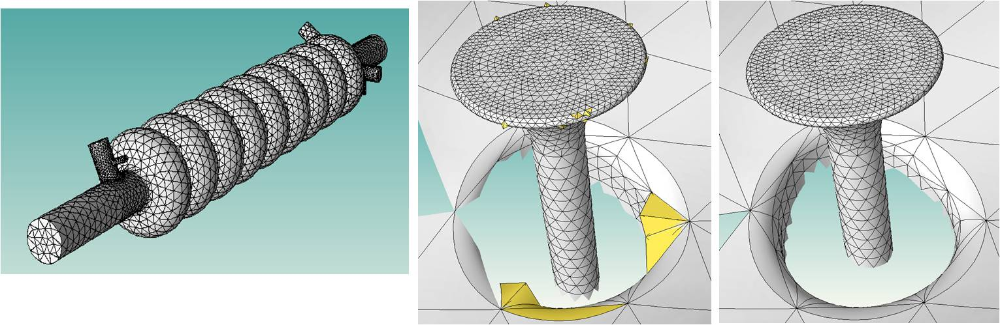
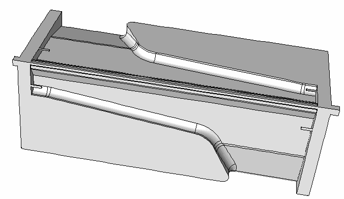
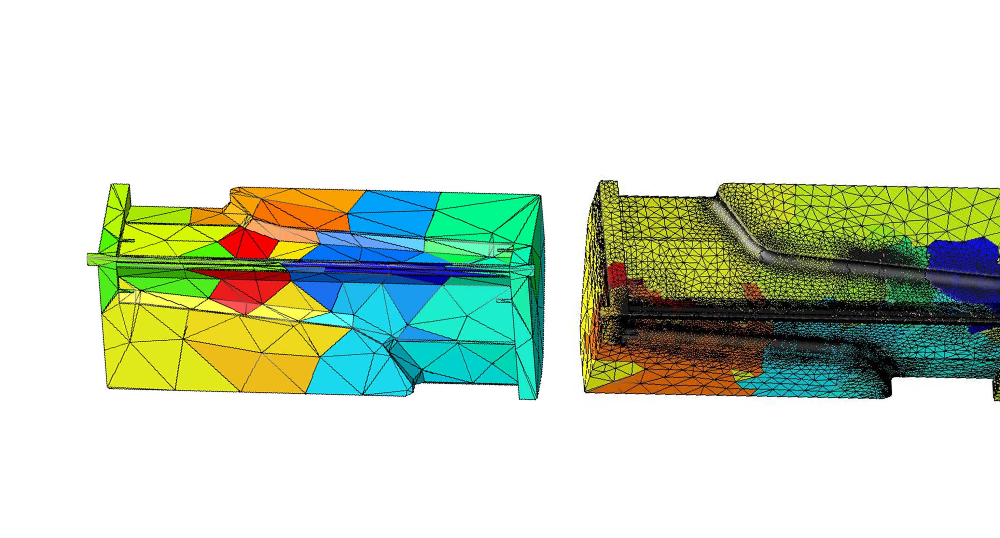
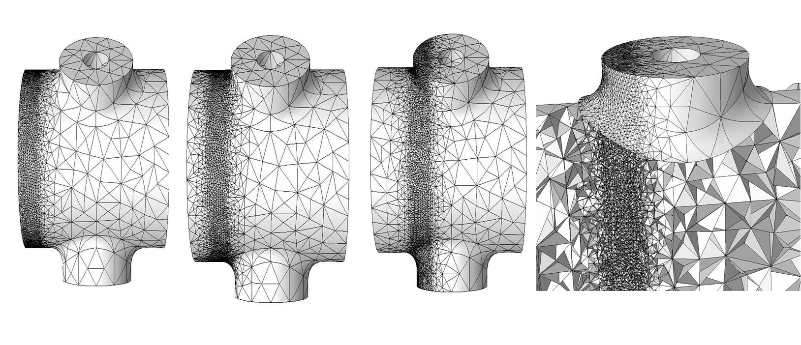
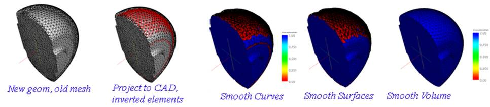

Particle Accelerator Design
Community Petascale Project for Accelerator Science and Simulation (COMPASS)
PI: Panagiotis Spentzouris
ITAPS Personnel: Mark Shephard (RPI), Tim Tautges (ANL)
COMPASS Personnel: Kwok Ko (SLAC), Rich Lee (SLAC)
Project Status: Active
Particle accelerators are a significant part of the DOE science goals, accounting for seven of the top twenty facilities priorities over the next two decades. Simulation will play an increasingly important role in the design of these accelerators because of its impact on the performance improvements and operating cost reductions required to make new facilities successful. Accelerator performance is sensitive to geometric shape because of the high-frequency operating regime of beam cavities in large-scale accelerators and placement of waveguide elements in reduced-scale accelerators. This sensitivity drives the need for sophisticated geometric modeling and body-fitted mesh generation services from ITAPS.
ITAPS geometry and mesh services are already playing a crucial role in design and optimization of accelerator cavities used in the International Linear Collider (ILC), the Continuous Electron Beam Accelerator Facility (CEBAF) upgrade, Spallation Neutron Source (SNS), and other near- and mid-term priority accelerator facilities. We will continue to work with accelerator scientists to provide shape optimization services that allow exploration of the design space in a more automated way. Moreover, there are a number of additional areas where ITAPS can continue to improve the state-of-the-art in accelerator modeling. For example, important accelerator design codes such as VORPAL (Tech-X) require new open source geometry tools that provide fast geometric queries for embedded boundary mesh generation and to track the motion of particles through accelerators with geometrically complex boundaries. In addition, more efficient and faithful solutions of the underlying physics can be achieved by incorporating parallel algorithms for the construction of adaptive grids to concentrate degrees of freedom where they have the most impact. Improved partitioning and load balancing services will be critical to obtaining maximal parallel performance of these adaptive methods. Future accelerator designs are currently analyzed using manual design evaluations, which are impractical or impossible to perform efficiently. for future accelerator designs, maximizing the performance using simulation where manual design evaluations would be impractical or impossible.
Mesh Generation and Problem Set Up
Our initial efforts with SLAC focused on the widely recognized issue of reducing the time needed to create a mesh starting with a CAD (computer-aided design) model giving the physical geometry for the simulation. There are two main bottlenecks involved in this process. One is the clean-up of the initial geometry such that it can be used for mesh generation. The second bottleneck (for SLAC) concerns the generation of high quality meshes as it relates to accuracy and convergence of the simulation code. Currently, many meshes may be generated before a successful simulation is obtained.
The geometry clean up process consists of removing unwanted detail, healing gaps between surfaces and volumes, and removing non-physical overlaps. This process can be quite tedious and time-consuming, often delaying simulations for months. ITAPS members have been assisting SLAC in the use of these tools. For example, toward the end of FY02, SLAC presented a very complex tapered waveguide geometry that needed to be cleaned up and meshed as quickly as possible (see Figure 1). The challenge in this geometry is that the position of the beam axis relative to the centroid of the geometric cross-section varies along the waveguide which makes it difficult to achieve sufficient mesh quality. Tim Tautges at ANL/ITAPS has been working with the SLAC analysts to clean up this geometry and mesh it using CUBIT.
|  |
|---|
Mesh Curve Correction Tools
The electromagnetic simulations performed by SLAC are characterized by extremely complex geometries and the use of higher order methods. Because the domains are curved and high order methods are being used, the meshes must also be curved to provide a sufficiently higher order geometric approximation to effectively achieve the desired level of accuracy. Standard mesh generation tools have difficulty creating such meshes and often contain inverted elements which pose a significant challenge for the simulation software. The ITAPS team has developed a mesh curve correction tool for this problem that automatically identifies the inverted elements and performs a series of mesh quality improvement operations to correct the inversion. The mesh curving procedures allowed SLAC to perform more accurate simulations that were also more computationally efficient; resulting in up to a 30% savings in CPU time due to a better conditioned system.
|  |
|---|
Omega3p Adaptive Loop Creation
The ITAPS Mesh adapt service is being used by the Stanford Linear Accelerator Center (SLAC) with their high-order finite element methods for calculating electromagnetic fields. In order for Omega3p to be a useful design tool, extremely accurate solutions needed to be computed with less than 0.01% error. This had to be done in complex CAD models such as shown in Figure 2 where tools such as automatic mesh generation and general mesh adaptation which maintains a proper approximation of the underlying geometry are required.
Results for the adaptive loop included obtaining accurate simulation results at a much lower cost. The figure belwo shows an initial mesh of 1,595 elements and the final adapted mesh of 23,082,517 elements for one accelerator component that they model and solve for in parallel. To achieve the same level of accuracy using a uniform mesh would add at least two orders of magnitude more elements.
|  |  |
|---|
Moving mesh windows
The short-range wakefield simulations also require adaptive mesh refinement around the beam to resolve high frequency while the rest of the domain can have a large mesh size. As an example, an ILC coupler has a beam pipe radius of 39mm, but the beam region in a short-range wakefield simulation is only 300 microns. If the beam size is used to generate a uniform mesh, it will contain over 100 million tetrahedral elements which is computationally infeasible. The TIAPS mesh adaption service is being used to provide SLAC with a âmoving meshâ refinement procedure that allows the computational scientists to focus elements in the areas that the beam is moving through and keep a coarse mesh everywhere else in the domain. The figure below shows this refinement region moving with the particles through the curved domains to achieve high accuracy at an acceptable level of computational efficiency. Considering that the domains are curved and high-order finite elements are used, the refined meshes must also be curved to provide a sufficiently high-order geometric approximation to ensure convergence of the solution. Using such techniques has resulted in a tenfold reduction in the computational cost of these simulations.
|  |
|---|
Shape Optimization Procedures
Future accelerator designs are currently performed using manual design evaluations in which a simulation is performed to analyze the performance of a given design. Given the results of simulation, the geometry of the accelerator cavity is modified slightly, a new mesh is generated, and the simulation is rerun to evaluate the new shape. This process currently requires significant human interaction and is impractical or impossible to perform efficiently. Advanced optimization techniques will allow accelerator scientists to explore the design space in a more automated way. The ITAPS center is working to provide tools that automatically adjust the geometry and mesh based on the optimization procedure. Such a technique requires significant interactions among many different ITAPS technologies including the CGM geometry modules, MOAB mesh database, and Mesquite mesh quality improvement tools. The figure below shows the steps of this procedure as the first the geometry and then the mesh are modified at each design step.
|  |
|---|
Liquid Targets for Future Accelerators.
ITAPS Personnel: Roman Samulyak (BNL)
Project Status: Active
The targetry group of the international, multi-institutional research group Neutrino Factory/Muon Collider Collaboration funded by DOE's HEP program is exploring the feasibility of high power liquid mercury targets for future particle accelerators. The numerical simulations aim to describe the hydrodynamic response of the target interacting with proton pulses in magnetic fields; which must be understood for reliable target design. Using ITAPS front tracking technologies, we developed software and performed simulations of liquid mercury jet targets interacting with high power proton beams in magnetic fields. MHD simulations which predicted strong distortion of the jet entering a 15 Tesla solenoid and the reduction of the target efficiency have led to a change of design parameters for the CERN MERIT experiment. Simulation also predicted strong instabilities and cavitation of the mercury jet interacting with proton pulses at zero magnetic field, and the strong stabilizing effect of the magnetic field. Guided by the MERIT experiment and our experimentally validated simulations, the targetry group of the Neutrino Factory / Muon Collider Collaboration have come to the conclusion that liquid mercury jet targets can reliably work in future accelerators and neutron sources up to 8 MW power limit. This research resulted in a unique computational code that will be able to serve as a design tool for future accelerator and neutron source targets.